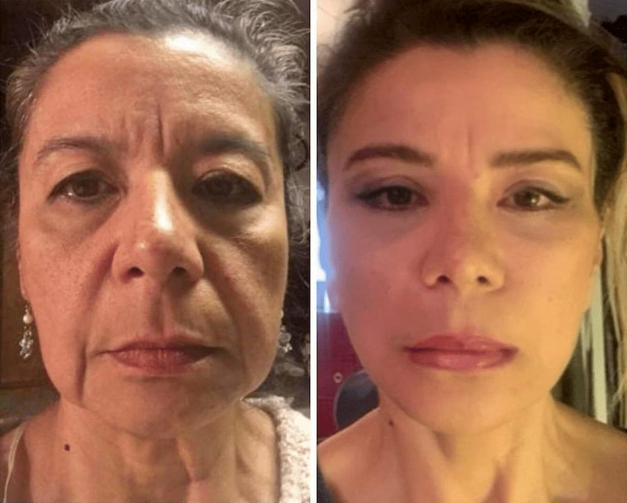
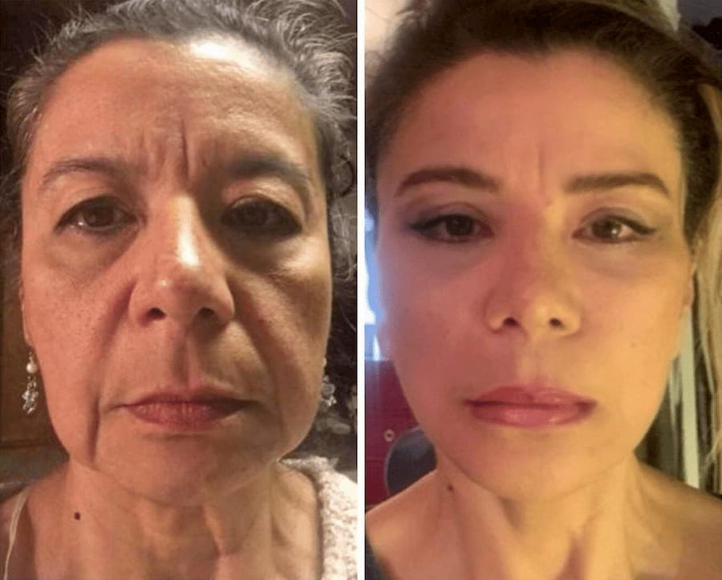

Pensaban que una madre de 47 años era la novia de su hijo. Ella revela el secreto de su juventud
Esta historia increíble se volvió rápidamente muy popular en Internet. Todo comenzó cuando Samuel David, de 22 años, le envió un mensaje a una chica que le gustaba, expresándole su deseo de conocerla. La chica notó que Samuel no estaba sola en su foto de perfil y le preguntó si a su novia no le importaría que se conocieran. La respuesta le sorprendió: "No es mi novia, es mi madre".

La chica pensó que era una excusa ridícula, pero cuando miró detalladamente el perfil de Samuel, descubrió que no le estaba mintiendo. Había varias fotos tituladas "Mi madre y yo" donde podía ver la misma belleza: su madre Paula Andrea, de 47 años. Resultó ser que no era la primera vez que confundían a Paula con la novia de su hijo, y después la bombardeaban con preguntas sobre cómo se las apañaba para verse dos veces más joven. Muchos sospechaban que su aspecto era producto de una cirugía plástica, pero en realidad su secreto era muy diferente.

— Paula, a juzgar por las fotos, no cambiaste nada en los últimos 20 años. Me gustaría hacerte una pregunta, aunque probablemente ya estés cansada de responderla: ¿cómo lo lograste?
— En primer lugar, permíteme darte las gracias, me voy a poner roja y todo. Es cierto que cambie, ahora mi estilo y mi forma de vestir es definitivamente mejor. En segundo lugar, tengo suerte: estoy casada con un dermatólogo.
— Entonces, ¿la razón por la que te ves tan linda y joven es completamente suya?
— Por supuesto. Es un especialista, un médico. Simplemente sigo sus recomendaciones.
— Si no es un secreto, ¿cuáles son esas recomendaciones?
— Las reglas clásicas que habrás escuchado innumerables veces: un buen sueño y una alimentación adecuada, pero sería una mentira si te dijera que es suficiente. Mi marido es un especialista licenciado que trabaja en colaboración con laboratorios. Hace unos 10 años, fue el primero en desarrollar una fórmula rejuvenecedora llamada Inno Gialuron . Yo fui la primera voluntaria en participar en los ensayos clínicos. En ese momento, tenía 37 años y, por supuesto, ya tenía arrugas, manchas pigmentadas, etc.

— ¿Quieres decir que tu marido desarrolló el producto especialmente para ti?
— Al principio, sí. Al verme en el espejo, estaba más y más molesta con el paso de los días y seguía quejándome de que mi marido era dermatólogo y que no podía hacer nada por el marchitamiento de mi piel. Para mí, las inyecciones de belleza no eran una opción. Como esposa de un médico, era plenamente consciente de las consecuencias de insertar agentes químicos debajo de la piel. Además, tengo un miedo terrible a las agujas, así que la fórmula que desarrolló fue un acierto en la diana por varias razones: en primer lugar, porque tendría una mujer joven y linda, en segundo lugar, porque dejaría de quejarme a él y, en tercer lugar, porque era una especie de desafío: hacía tiempo que deseaba comenzar a desarrollar su propio producto porque en el mercado de los cosméticos no había nada que cumpliera plenamente con sus requisitos.
— ¿El producto dio buenos resultados inmediatamente?
— La fórmula fue probada y ajustada varias veces, pero los primeros resultados fueron muy reveladores solamente después de la segunda o tercera prueba. Me aplicaba la producto cada día durante un mes y, una bonita mañana, al mirarme en el espejo, me di cuenta de que mis arrugas habían desaparecido y que el tono de mi piel se había vuelto uniforme. Desde entonces, desde hace 10 años, mi piel se ve como la ves.
— Dr. Orozco, cuéntenos cómo logró desarrollar una fórmula que da resultados tan notables y por qué casi nadie la conoce.
— Para mí, como especialista, no hay nada complicado en esta fórmula: simplemente hay que saber cómo está construido el cuerpo humano y las funciones de la piel. En cuanto a su segunda pregunta, este producto es muy conocida: yo se la recomiendo a mis pacientes, y estos a sus amigos, etc. Pero debe tener en cuenta que el mercado moderno está lleno de productos cosméticos. Las grandes empresas invierten enormes cantidades de dinero en marketing y publicidad, y es imposible romper el ruido de información que generan.
— Acaba de mencionar que hay que saber cómo funciona la piel humana. ¿Puede explicarnos este proceso con palabras sencillas?
— A partir de los 25 años, las personas comienzan a perder cada año aproximadamente el 1% del contenido de colágeno en la piel, que es uno de los "bloques de construcción" de la epidermis. Esto conduce a la desorganización de su estructura, es decir, la estructura de la piel se altera. Además, se ralentizan los procesos de regeneración de la piel y de todo el organismo. El nuevo material de construcción se fabrica en cantidades menores, mientras que el antiguo se descompone y no se restaura. Esto conduce a una pérdida de elasticidad y, por lo tanto, a la flacidez de la piel, a la pérdida de volumen y, finalmente, a la formación de arrugas profundas.
— ¿Y cómo funciona su fórmula?
— Si el cuerpo no puede producir colágeno, hay que ayudarle. Es por eso que la fórmula está enriquecida con colágeno adicional, pero como sabrá, el colágeno adicional solo afecta a las consecuencias del problema, y nosotros tenemos que lidiar con su causa: estimular la síntesis de nuevo colágeno y la acumulación de fibras de colágeno.
Tardamos un tiempo para buscar la mejor solución y, en nuestra primera versión de la fórmula, usamos retinol. Sin embargo, los resultados de las pruebas mostraron que el retinol tiene muchos efectos secundarios: descamación de la piel, picazón, reacciones alérgicas, etc. Entonces, decidimos reemplazar el retinol por su análogo vegetal, el bakuchiol.
Otros ensayos mostraron que el bakuchiol no solo estimula la liberación de colágeno, es decir, restaura la elasticidad de la piel y alisa las arrugas, sino que además suprime la liberación de melanina, responsable de la formación de las manchas pigmentadas. En algunos casos, gracias a sus propiedades antisépticas, elimina las imperfecciones de la piel y el acné. Fue entonces cuando nos dimos cuenta de que habíamos encontrado lo que necesitábamos.
— ¿Hay otros ejemplos, además de su esposa, que puedan demostrar la eficacia de la fórmula?
— Por supuesto. Paula fue la primera, pero después de hacer todas las pruebas de laboratorio, pusimos la producto en producción. Yo, por mi parte, comencé a recomendarla a mis pacientes, y ellos, a su vez, la recomendaban a familiares y amigos. Su experiencia ha demostrado que incluso las mujeres mayores de 65 años pueden deshacerse de las arrugas faciales, resolviendo el problema de la sequedad y la flacidez de la piel.


 

— Dice que los poderosos gigantes de productos cosméticos dificultan su entrada al mercado. ¿Cómo se comercializa su producto? ¿Dónde se puede comprar?
— Por ahora, lamentablemente, solo se vende en nuestra web oficial. Esperamos que en el futuro podamos llegar a los estantes de las farmacias y tiendas mientras seguimos negociando, pero esta situación beneficia a los compradores: dado que la producto no se comercializa en nuestro país y no la publicitamos entre los consumidores como parte de un programa de marketing, a menudo llevamos a cabo promociones limitadas con descuentos.